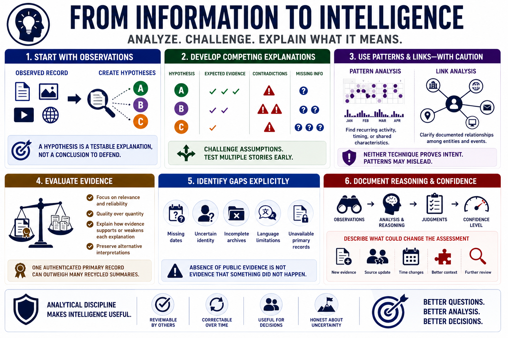

Analyze and Develop Judgments
Connecting to LMS... Progress: in progress

Narration
Analysis moves from organized information to intelligence by explaining what the evidence means for the requirement. Begin with the observed record and create one or more hypotheses. A hypothesis is a testable explanation, not a conclusion to defend.
Develop competing explanations early. For each one, identify expected evidence, contradictions, and missing information. This makes it harder to anchor on the first plausible story and then collect only material that confirms it.
Pattern analysis can reveal recurring activity, timing, or shared characteristics. Link analysis can clarify documented relationships among entities and events. Neither technique proves intent by itself. Patterns may arise from common services, coincidence, incomplete data, or collection bias.
Evaluate evidence according to relevance and reliability rather than volume. A single authenticated primary record may outweigh many recycled summaries. Record why evidence supports or weakens each explanation, and preserve alternative interpretations where ambiguity remains.
Identify gaps explicitly. Missing dates, uncertain identity, incomplete archives, language limitations, or unavailable primary records can materially affect the judgment. Absence of public evidence is not automatically evidence that something did not happen.
Document the chain of reasoning from observations to judgments. Use calibrated confidence and describe what could change the assessment. Analytical discipline makes the result reviewable, correctable, and useful without pretending that public information removes uncertainty.